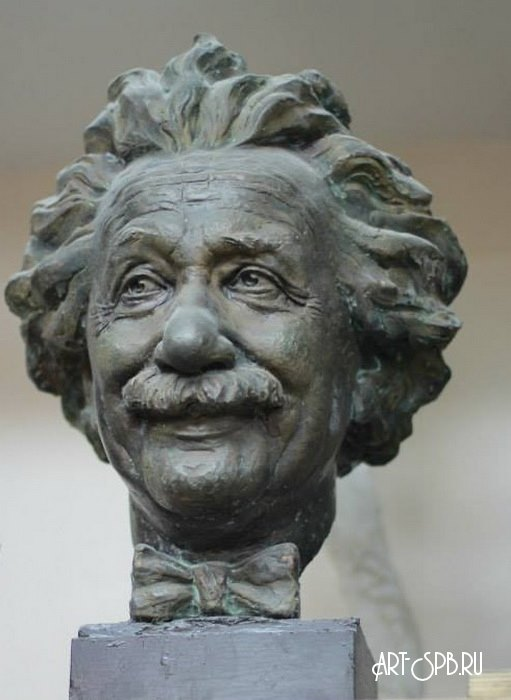
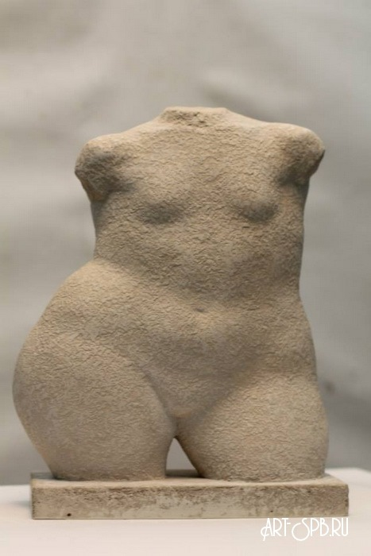

СКУЛЬПТУРА. КЛАССИФИКАЦИЯ И РАЗНОВИДНОСТИ
Скульптура, ваяние, пластика (от лат. sculptura, от sculpo - вырезаю, высекаю) - вид изобразительного искусства, произведения которого имеют объемную, трехмерную форму. Скульптура может быть изготовлена в любом жанре, самые распространенные жанры - фигуратив (портрет, исторический, жанровая композиция, ню, религиозный, мифологический) и анималистический жанр. Материалы для изготовления скульптуры многообразны: металл, камень, глина и обожженная глина (фаянс, фарфор, терракота, майолика), гипс, дерево, кость и др. Методы обработки скульптуры тоже разнообразны: литье, ковка, чеканка, высекание, лепка, резьба и др. Существует два основных вида пластики: круглая скульптура (свободно размещающуюся в пространстве) и рельеф (объемные изображения располагаются на плоскости).
КРУГЛАЯ СКУЛЬПТУРА
Обход - одно из важнейших условий восприятия круглой пластики. Образ скульптуры по-разному воспринимается с разных углов обозрения, и рождаются новые впечатления. Круглую скульптуру делят на монументальную, монументально-декоративную, станковую и малых форм. Монументальная и монументально-декоративная скульптура тесно связаны с архитектурой. Станковая скульптура - вид скульптуры, имеющий самостоятельное значение, рассчитанный на восприятие с близкого расстояния и не связанный с архитектурой и предметным окружением. Обычно размер станковой скульптуры приближен к натуральной величине. Станковой скульптуре свойственны психологизм, повествовательность, часто используется символистический и метафорический язык. Она включает различные виды скульптурной композиции: голова, бюст, торс, фигура, группа. Одним из наиболее важных жанров станковой скульптуры является портрет, дающий уникальную возможность для восприятия – рассмотрение скульптуры с разных точек зрения, что представляет огромные возможности для многосторонней характеристики портретируемого.
К станковой скультуре относятся:
|  |
Голова |
|  |
Торс - скульптурное изображение туловища человека без головы, рук и ног. Торс может быть обломком античной скульптуры или самостоятельной скульптурной композицией. |